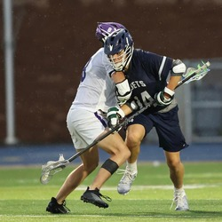

The hobby I have been doing for nearly 15 years and the one I am continuing to do here at Illinois Tech is lacrosse
Another one of my favorite hobbies is mountain biking
I am a professional mountain biker and have done several races. During the summers I coach with the non-profit organization Kids on Bikes
I also enjoy gaming, reading, and watching movies!